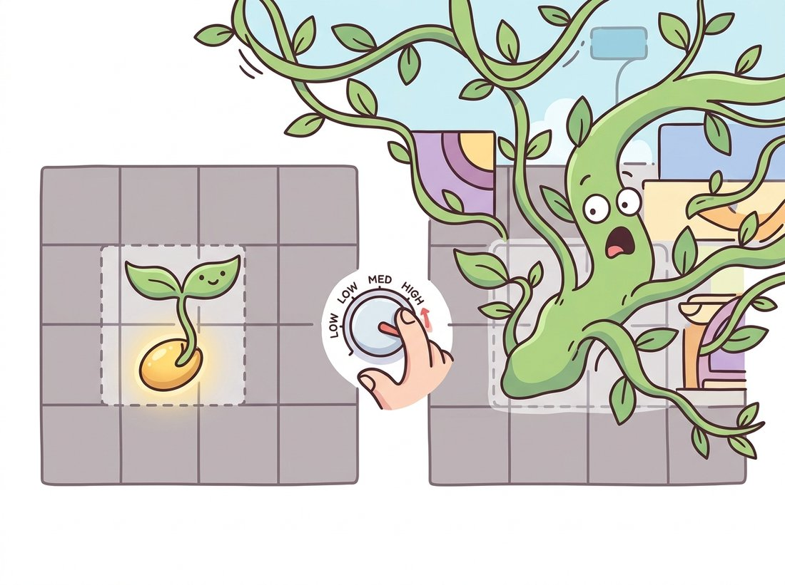

"Plant me a seed and I will spread to every neighbor that resembles my heart. Plant it badly and I will swallow the whole image. Choose wisely."
A Region-Growing Routine With Boundless Enthusiasm
Region growing fixes the deepest flaw of clustering by building segments that are connected on the image grid by construction, never in feature space alone. You drop one or more seed pixels into the image and let each region expand outward, swallowing any neighboring pixel that passes a homogeneity test, and stopping at boundaries where the test fails. Because growth proceeds along pixel adjacency, every region is a single connected blob, so the merged-distant-objects and speckle problems of Section 11.1 simply cannot occur. Split-and-merge is the same homogeneity idea run top-down: start with the whole image, recursively quarter any block that is too varied, then glue adjacent blocks that match. Both methods are fast and intuitive, and both live or die by two choices: where the seeds go, and how strict the homogeneity predicate is.
The previous section left us with a baseline that segments color correctly but ignores the image grid entirely, producing speckle and merging objects that merely share a color. What if you simply refused to let a region jump across the image, and forced it to crawl outward from a starting pixel one neighbor at a time? That single constraint is the whole idea here, and it turns out to be the same tool you have already fought with inside every photo editor. This section restores spatial connectivity in the most direct way imaginable: a region is grown one neighbor at a time, so it is connected from its first pixel to its last. We are trading the global-but-blind view of clustering for a local-but-grounded one. The flood-fill machinery here is a close cousin of the connected-components labeling you met in Chapter 6; the difference is that the inclusion test now depends on intensity similarity, not just on a fixed binary mask.
1. Region Growing: Flood-Fill With a Predicate Basic
The algorithm is a breadth-first or depth-first traversal of the pixel grid, gated by a homogeneity predicate $P$. Starting from a seed pixel $s$, maintain a queue of candidate pixels. Pop a pixel, and for each of its 4- or 8-connected neighbors that has not yet been assigned a region, test $P$. If the neighbor passes, add it to the region and push it onto the queue; if it fails, it becomes a boundary and is left for another region. Growth stops when the queue empties.
The predicate is where all the design lives. Three common forms, in order of robustness:
- Compare to the seed. Include neighbor $p$ if $|I(p) - I(s)| \le \tau$. Simple, but a region can drift far from the seed's value through a chain of small steps, the so-called leakage problem.
- Compare to the immediate neighbor. Include $p$ if $|I(p) - I(q)| \le \tau$ where $q$ is the already-included pixel we are expanding from. This follows gentle gradients and leaks even more readily across a slow ramp.
- Compare to the running region mean. Include $p$ if $|I(p) - \bar{I}_{\text{region}}| \le \tau$, updating $\bar{I}$ as the region grows. This resists leakage best, because the region's accumulated statistics anchor the test, and it is the form used in the code below.
Figure 11.2.1 traces the first few expansion steps from a single seed under the region-mean predicate, showing how the frontier advances into homogeneous territory and halts at an intensity step.
Here is a compact from-scratch region grower using the region-mean predicate and a queue. It works on a grayscale image and returns a boolean mask of the grown region.
import numpy as np
from collections import deque
def region_grow(gray, seed, tau=12.0, connectivity=4):
"""Grow a region from `seed` (row, col); include a pixel if its value is
within tau of the region's running mean. Returns a boolean mask."""
h, w = gray.shape
mask = np.zeros((h, w), dtype=bool)
r0, c0 = seed
mask[r0, c0] = True
total, count = float(gray[r0, c0]), 1 # running sum and pixel count
q = deque([(r0, c0)])
nbrs = [(-1,0),(1,0),(0,-1),(0,1)]
if connectivity == 8:
nbrs += [(-1,-1),(-1,1),(1,-1),(1,1)]
while q:
r, c = q.popleft()
for dr, dc in nbrs:
rr, cc = r + dr, c + dc
if 0 <= rr < h and 0 <= cc < w and not mask[rr, cc]:
region_mean = total / count
if abs(float(gray[rr, cc]) - region_mean) <= tau:
mask[rr, cc] = True
total += float(gray[rr, cc]) # update stats as region grows
count += 1
q.append((rr, cc))
return mask
gray = np.array([[101,99,103,42,40],
[100,100,98,39,41],
[97,102,104,38,40]], dtype=np.uint8)
m = region_grow(gray, seed=(1,1), tau=12)
print(m.astype(int))
# [[1 1 1 0 0]
# [1 1 1 0 0]
# [1 1 1 0 0]] <- the bright block grew; the dark block was rejectedRegion growing has one tuning knob, $\tau$, and it is unforgiving. Set it too low and a region fractures into pieces wherever noise nudges a pixel past the bound; set it too high and the region leaks across a faint boundary into a neighbor, then keeps going, because once it crosses, the neighbor's pixels pull the running mean along. There is rarely a single $\tau$ that works for an entire natural image, which is why production pipelines either set $\tau$ adaptively per region, smooth the image first to suppress noise (a Gaussian blur from Chapter 3), or grow on a gradient image so the predicate stops at edges rather than at absolute intensities.
The Magic Wand in Photoshop, the Select-by-Color tool in GIMP, and the "tap to select" in your phone's photo editor are all single-seed region growers with a tolerance slider that is precisely the $\tau$ above. Every time you nudged the tolerance up to catch one more stray pixel and the selection suddenly swallowed the entire sky, you met the leakage problem in person: one tiny step over the knife-edge let the region chain its way across a faint gradient into the next object. The tool has not changed in thirty years; only the marketing name for $\tau$ has. The illustration below dramatizes exactly that one-notch-too-far moment.

2. Seed Selection: Where You Start Decides Everything Basic
A region grower is only as good as its seeds. A seed placed inside the object grows the object; a seed placed on a boundary grows ambiguously; a seed placed in the wrong region grows the wrong thing. Three strategies dominate:
- Manual seeds. A user clicks inside each region of interest. This is the interactive segmentation tradition, and it remains how the magic-wand tools in image editors work. It is also the conceptual ancestor of the click prompts SAM uses in Chapter 24.
- Automatic seeds from extrema. Use local intensity minima or maxima, or the peaks of the distance transform from Chapter 6, as seeds. This is exactly the marker-finding move that Section 11.3's marker-controlled watershed formalizes.
- Grid seeds. Place seeds on a regular lattice and grow all of them at once, letting regions compete for pixels. This is the seed-of-an-idea behind superpixels in Section 11.5.
A subtle point: when many seeds grow simultaneously, you must decide what happens when two frontiers meet. The usual rule is first-come-first-served, the pixel joins whichever region reached it first, which makes the result mildly dependent on traversal order. OpenCV's cv2.floodFill implements single-seed growing with a configurable tolerance and is the fastest path to a working region grower.
import cv2
import numpy as np
img = cv2.imread("scene.jpg")
h, w = img.shape[:2]
mask = np.zeros((h + 2, w + 2), np.uint8) # floodFill requires a +2 border mask
seed = (w // 2, h // 2) # (x, y), note OpenCV's column-first order
# loDiff / upDiff: how far below / above the seed a neighbor may be and still join.
# FLOODFILL_FIXED_RANGE compares each pixel to the SEED, not to its neighbor.
flags = 8 | cv2.FLOODFILL_FIXED_RANGE | (255 << 8)
num, _, mask, rect = cv2.floodFill(
img.copy(), mask, seed, newVal=(0, 255, 0),
loDiff=(12, 12, 12), upDiff=(12, 12, 12), flags=flags)
print(num, "pixels grown into the region; bounding box:", rect)
# 48217 pixels grown into the region; bounding box: (61, 70, 410, 305)cv2.floodFill. The FLOODFILL_FIXED_RANGE flag makes the comparison relative to the seed value (resisting leakage); dropping it would compare each pixel to its already-filled neighbor and follow gradients instead.Take the Code Fragment 2 call and rerun it on one photo with the same seed but a rising tolerance, loDiff = upDiff = (t, t, t) for $t \in \{2, 5, 12, 25, 50\}$, printing the grown pixel count each time. You will see the count creep up gently and then jump, often by an order of magnitude, between two adjacent settings: that cliff is the leakage threshold the Key Insight calls a knife-edge, the exact moment your region chains across a faint boundary into the next object. This is the Magic Wand "tolerance one notch too far" failure from the Fun Fact, reproduced in five lines. For the revealing contrast, repeat the sweep with the FLOODFILL_FIXED_RANGE flag dropped (so each pixel is compared to its already-filled neighbor, not the seed) and watch the cliff arrive at a much lower $t$, because following gradients leaks far more eagerly than anchoring to the seed.
3. Split-and-Merge: Top-Down Homogeneity Intermediate
Region growing is bottom-up: it starts from points and expands. Split-and-merge is its top-down dual. It starts with the whole image as one region and recursively subdivides:
- Split. If a region fails the homogeneity predicate (for example its intensity variance exceeds a threshold), split it into four equal quadrants. Recurse on each quadrant. This produces a quadtree, in which every leaf is a homogeneous square block.
- Merge. Sweep the leaf blocks and merge any two adjacent ones whose union still satisfies the predicate. Repeat until no more merges are possible.
The split phase guarantees homogeneity but produces an oversegmented grid of squares with blocky boundaries; the merge phase glues those squares back into natural regions. Figure 11.2.2 shows the quadtree split of a synthetic image with one textured corner.
Split-and-merge has a real advantage over region growing: it needs no seeds. The recursive structure visits the whole image, so nothing depends on a lucky starting point. Its disadvantages are equally real: the quadtree's square subdivision imposes blocky, axis-aligned boundaries that the merge step only partly removes, and the merge step's adjacency bookkeeping is fiddly to implement correctly. scikit-image does not ship a single split-and-merge call, but its region adjacency graph tools make the merge phase tractable, and the closely related felzenszwalb segmentation of Section 11.4 achieves the same homogeneity-driven merging far more efficiently.
A correct multi-seed region grower with frontier-collision handling is 60-plus lines; a quadtree split-and-merge with an adjacency-graph merge phase is well over 100. Two library paths shorten this dramatically. For single-region growing, cv2.floodFill is one call (shown above) and runs in optimized C. For the merge phase of split-and-merge, scikit-image's region adjacency graph turns "merge adjacent similar blocks" into a graph operation:
from skimage import graph # skimage 0.20+ hosts RAG tools here
from skimage.segmentation import felzenszwalb
from skimage import data
img = data.astronaut()
labels = felzenszwalb(img, scale=200, sigma=0.8, min_size=50) # fast initial regions
rag = graph.rag_mean_color(img, labels) # build adjacency graph
merged = graph.cut_threshold(labels, rag, thresh=29) # merge similar neighbors
print("regions before merge:", labels.max() + 1,
" after merge:", merged.max() + 1)
# regions before merge: 412 after merge: 78That is roughly a 100-to-3 reduction. The library handles the adjacency bookkeeping, the running region statistics, and the iterative threshold-based merging that are the error-prone parts of a hand-rolled version. Note this is the same region-adjacency-graph machinery the superpixel pipelines of Section 11.5 reuse.
A civil-engineering startup built a tool to measure crack length in close-up photographs of concrete bridge decks. Cracks are dark, thin, and connected, exactly the structure region growing handles well, but the surface texture of weathered concrete defeated a global threshold: the same gray value was crack here and shadow there. The engineer's pipeline seeded region growing at the darkest local minima after a small Gaussian blur, used a region-mean predicate to follow the crack's own darkness rather than an absolute cutoff, and let connectivity guarantee that each measured region was a single continuous crack rather than a scatter of dark speckles.
The decision that earned the contract was switching the predicate from seed-relative to region-mean. Seed-relative growing leaked out of the crack wherever a shadow touched it; the region-mean predicate let the region's own accumulated statistics resist the leak, because a wide shadow's brighter pixels pulled the mean away from the crack and tightened the effective bound. The result was crack-length measurements within five percent of a surveyor's manual trace, on a phone-camera image, with no training data. The lesson: when the target is connected and the background is heterogeneous, growing from good seeds beats thresholding the whole frame.
4. The Limits of Greedy Growing Intermediate
Region growing and split-and-merge share a hidden weakness: both make greedy, local decisions and never reconsider them. Once region growing admits a pixel, it stays admitted, even if it later turns out to be the gateway through which the region leaked into a neighbor. Once split-and-merge merges two blocks, the merge is permanent. Neither method optimizes a global objective, so neither can recover from an early mistake. This is precisely the gap that Section 11.4's graph-cut formulation closes: by writing the segmentation as the minimum of a global energy, graph cuts find the partition that is best overall, not merely the one that greedy local steps stumbled into.
There is also a problem these methods cannot even attempt: touching objects of the same intensity. Two cells pressed against each other, or two coins overlapping slightly, present no intensity boundary between them, so region growing floods straight across and returns them as one region. No homogeneity predicate can split them, because by the predicate's own measure they are homogeneous. Separating them requires shape information, specifically the geometry of how the blob narrows at the junction, and that is exactly what the watershed transform of the next section reads off the distance transform. Keep the touching-cells problem in mind; it is the headline motivation for Section 11.3.
The two ideas of this section, a seed and a homogeneity rule, both survive in the deep era, transformed. The seed became the prompt: in Segment Anything (Kirillov et al., ICCV 2023) and SAM 2 (Ravi et al., ICLR 2025) a single click plays the role of the region-growing seed, but instead of a hand-tuned $\tau$ the model has learned what "the same object" means from millions of masks, so it grows semantically rather than by intensity. The homogeneity predicate became a learned affinity: methods such as the spatial propagation networks behind some interactive matting tools, and the mask-refinement of EntitySeg-style entity segmentation (Qi et al., 2023), learn pixel-to-pixel similarity from data rather than from an absolute difference threshold. The 2024-2025 trend is interactive and promptable segmentation that keeps the user-in-the-loop spirit of region growing while replacing its brittle parts with learned components. The grammar (seed, grow, stop) is unchanged; the rules became weights.
Consider a 1D intensity profile that ramps smoothly from 50 to 200 over 150 pixels (a gradient with no sharp edge). For a seed at the value-50 end and $\tau = 10$, predict where region growing stops under (a) the seed-relative predicate, (b) the neighbor-relative predicate, and (c) the region-mean predicate. Explain which one leaks all the way to 200 and why, and state the general principle about smooth ramps that this reveals.
Extend the region_grow function so it (a) operates on a 3-channel image using CIELAB color distance instead of grayscale difference, and (b) optionally pre-smooths the image with a Gaussian to suppress noise. Run it on a natural image from three different seeds in the same object and overlay the three resulting masks. Quantify how much the mask changes with seed position by reporting the intersection-over-union between the three masks, and discuss what this says about seed sensitivity.
Create or find an image of two overlapping coins of similar brightness on a dark background. Apply your seeded region grower with a seed inside each coin. Show that the two regions either merge into one blob or fight over the overlap, and explain in terms of the missing intensity boundary why no choice of $\tau$ fixes it. Then state, in one sentence each, how the watershed of Section 11.3 and the graph cut of Section 11.4 would each attack this same image.